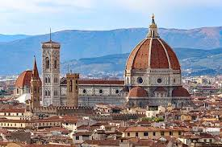
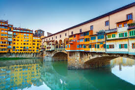
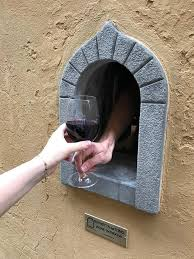

My Take
Florence feels smaller and more personal than other cities. It's less about rushing around and more about enjoying food, drinks, and the atmosphere.
It does feel very study abroad-heavy, but honestly that makes it fun — especially for a weekend trip.
Best For
- Food + wine
- Social weekends
- Shopping
- Slower trips
What to Do
Must-See
Duomo — The iconic cathedral, beautiful architecture. Ponte Vecchio — The famous bridge, stunning especially at sunset. Piazzale Michelangelo — Best views of the whole city.
Experiences
Wine tour (Tuscany) — One of the best parts of the trip, 100% worth it. Pasta making class — So fun and memorable. Walking + shopping — Florence has incredible leather and artisan shops.

🍝 Pasta Making Class
So fun and honestly one of the most memorable things you'll do. You make fresh pasta from scratch, learn real Italian techniques, and then eat what you made. It's the kind of experience that actually sticks with you.
🍷 Tuscany Wine Tour
100% worth it — one of the best parts of the trip. Chianti wine region is close by, and doing a wine tasting with countryside views is genuinely incredible. You get to taste real Tuscan wine, learn about the region, and enjoy the rolling hills.

Where to Eat & Drink
Must Try
- Gusta Pizza - Incredible pizza spot
- Mercato Centrale - Central market with food stalls, great for quick meals
Drinks / Views
- Rooftop bars - Amazing views of the city and Duomo
- Wine windows - Historic little windows in buildings where wine is served — uniquely Florentine
Where to Stay
Neighborhoods
City center — Best option for walkability and being close to everything.
Everything is walkable — Florence is small enough that location matters less than in bigger cities. You can walk across the whole thing in about 20 minutes.
Budget Options
- Hostels: €18–25/night
- Airbnb: €35–60/night
- Budget hotels: €50–80/night

My Real Tips
- Don't overpack your schedule. Florence is best enjoyed slowly — sit at cafés, enjoy meals, don't rush.
- Shopping is unreal (leather!!). The leather goods and artisan shops are genuinely incredible and affordable.
- Food is the highlight. Focus on eating well — the pasta, wine, and local food is what makes Florence special.
- Perfect for a fun weekend. 2–3 days is ideal. You get the experience without art overload.
- Ponte Vecchio at sunset is unmissable. The light is perfect and it's genuinely beautiful.
- Book the pasta class ahead. They fill up, especially on weekends.
- Chianti wine tour is easy and worth it. Train or tour operators make it simple.
Sample Weekend Plan
Friday
Arrive → dinner → drinks
Saturday
Wine tour → sunset view
Sunday
Brunch → shopping → leave
Pro tip: Florence's best experiences center around food and wine. Make sure to do at least one wine tour and one nice meal — that's what the city is really about.